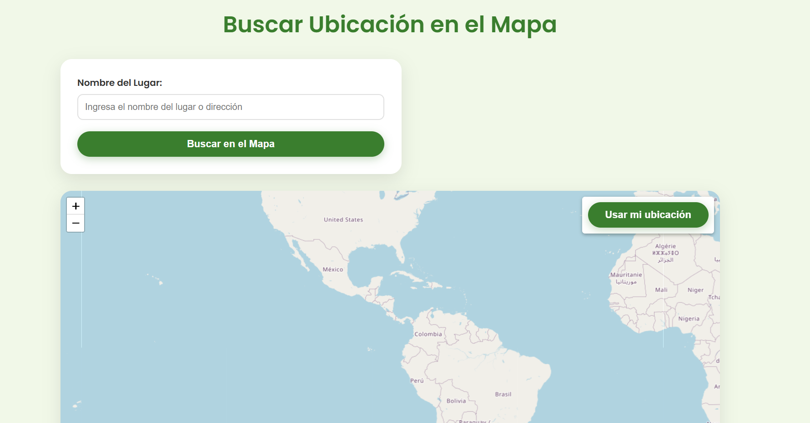
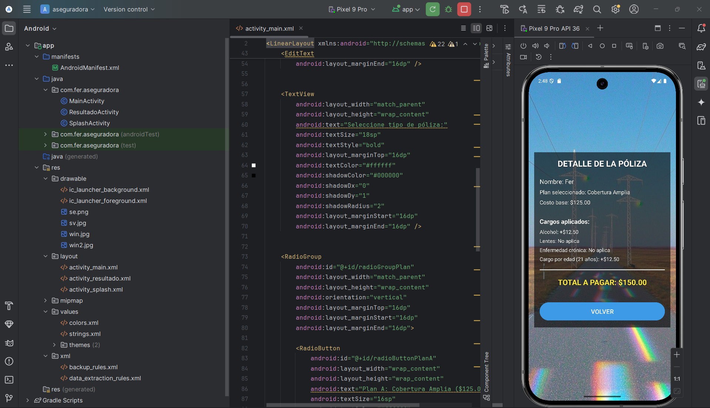
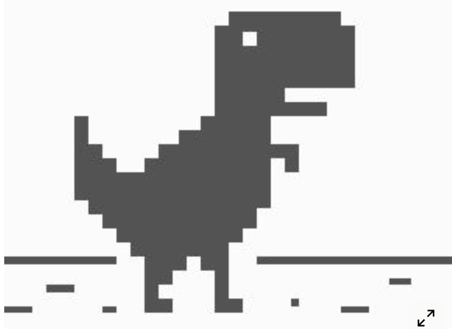

Ingeniero en formación especializado en diseño, optimización y gestión de bases de datos y tecnologias informaticas. Con experiencia en modelado entidad-relación, normalización hasta 3FN, y desarrollo de soluciones ETL. Apasionado por transformar datos crudos en información estratégica mediante arquitecturas escalables y consultas optimizadas. En constante actualización tecnológica para implementar las mejores prácticas del mercado.
Proyectos Destacados

AgroGeo - Plataforma de Geolocalización Agrícola
Sistema de información geográfica para gestión de agromercados con base de datos PostgreSQL/PostGIS. Implementación de índices espaciales, triggers de auditoría y consultas geoespaciales optimizadas para análisis de cobertura territorial.

VetSys - Sistema ERP Veterinario Integral
Plataforma de gestión veterinaria con arquitectura de base de datos MariaDB. Diseño de 12+ tablas normalizadas en 3FN, implementación de procedimientos almacenados para reportes financieros y sistema CRUD con validaciones de integridad referencial.

SegurosApp - Gestión Móvil de Pólizas de Seguro
Aplicación móvil con backend en SQLite para cálculo automatizado de primas de seguros. Implementación de algoritmos matemáticos para cálculo de riesgos, transacciones ACID para garantizar consistencia y sincronización con servidor PostgreSQL.

Perfil Profesional
Educación: Ingeniería en Manejo y Gestión de Bases de Datos (Ciclo 9 en curso) - Universidad Gerardo Barrios.
Experiencia: Pasantía en Quantaroot, S.A. de C.V. auxiliar de developer backend y frontier.
Herramientas: Microsoft Office Suite, Power BI y Tableau para visualización de datos y generación de informes analíticos.
Certificaciones: Google for Education. Nivel de inglés técnico básico para interpretación de documentación técnica y comunicación profesional.
Contacto
¿Buscas un especialista en bases de datos para tu próximo proyecto? ¡Conectemos!